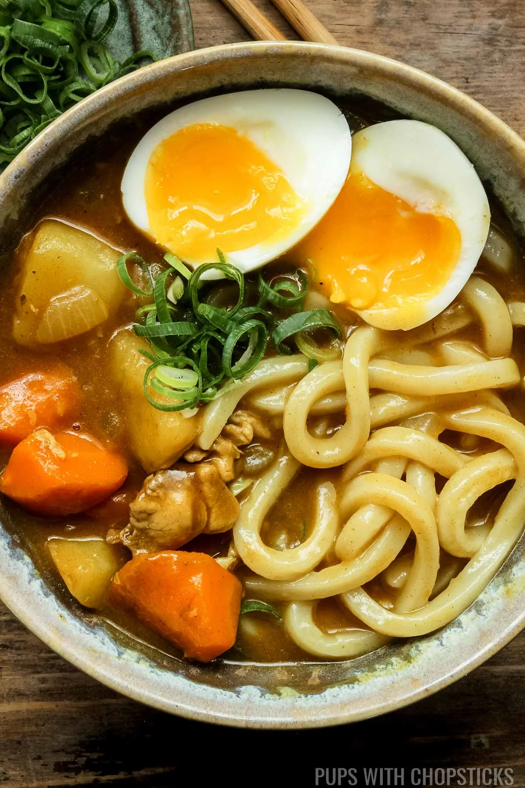

Curry Udon

Disclaimer: This recipe was taken from Pups with Chopsticks for the sole purpose of this learning experiment. All credits to the owner!
Warmth in a Bowl
This dish is my all-time favourite!
Works well as a celebratory dish, a pick-me-up, or a simple dinner dish.
Can't go wrong with chewy udon noodles soaked in a warm curry broth, with potatoes, carrots and maybe an egg as well!
Ingredients
For the broth
- Curry roux x 2-3 blocks
- Broth or stock x 2 cups (any kind)
- Soy sauce x 1.5 tbsp
- Mirin x 1 tbsp
For the rest
- Frozen udon noodles x 2 bricks
- Boneless chicken thigh x 1-2 (cut into bite-sized pieces)
- Carrot x 1 (cut into bite-sized pieces)
- Potato x 1 (cut into bite-sized pieces)
- Small yellow onion x 1 (diced)
- Garlic x 2 cloves (finely minced)
- Large eggs x2 (soft boiled; optional)
Steps
Prepare the Ingredients
- Peel the carrot and potato. Wash and chop them into bite-sized pieces.
- Peel the onion and dice it.
- Peel and finely mince the garlic.
- Remove the curry roux blocks from the packaging and finely chop them into small pieces for easier dissolving.
- Cut the chicken into bite-sized pieces and sprinkle a bit of salt on it, for easier browning
Make the Curry Udon Noodle Soup
- Set a pot over the stove and set the fire to medium heat.
- Add a bit of oil, add the chopped carrots and potatoes, and cook them for about 2-3 minutes.
- Add the chicken and brown it till about 50% done. This will take about 2-3 minutes.
- Add the diced onions and garlic, cook for 1-2 minutes.
- Push all vegetables and chicken to the side of the pot, and add the chopped curry roux blocks, and half the stock.
Gently stir until roux is fully dissolved.
- Add in the rest of the stock and stir everything together.
- Set the stove to medium-low heat and let everything simmer (with the lid on) for 15-20 minutes, or until the carrots and potatoes are soft.
Make the Soft Boiled Eggs
- Put a small pot of water over the stove on high heat and wait for the water to boil.
- Once water has boiled, gently add the eggs with a spoon.
- Cook the eggs for 6.5 minutes for soft boiled eggs.
- Fish the eggs out, and add into a bowl of cold water to stop the cooking process.
- Once cool, crack and peel the eggs and cut lengthwise in half.
Prepare the Udon
- Place the frozen brick of udon into a colander and run cold tap water over it, until it has thawed and softened from its brick form.
- Once the potatoes and carrots in the soup are soft, the curry soup is done.
- Add the udon noodles into the soup and cook it for 30 seconds to 1 minute to warm them up.
Finishing Touches
Place the noodles in a serving bowl, ladle the curry soup over it, and top it with the halved soft boiled eggs.
Enjoy!